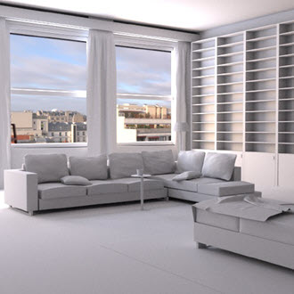
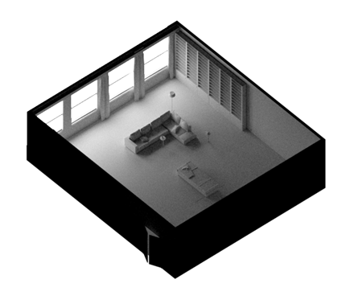
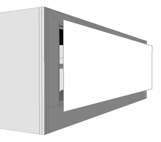
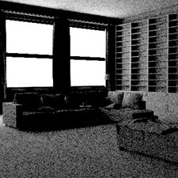
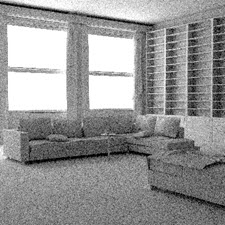
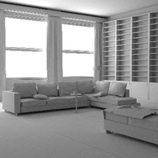
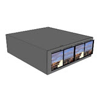
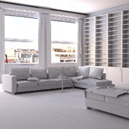
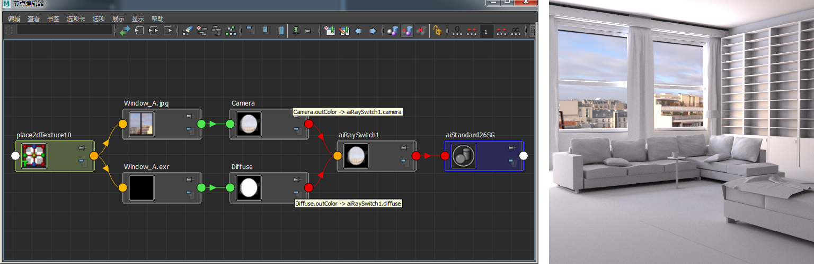

HDRI -> standard_surface.emission
通过向 standard_surface 着色器添加“自发光”(Emission)，几何体可以“发射灯光”。因此，我们可以在窗户外面放置一些自发光几何体来为房间照明。但是，不建议使用这种方法。使用来自标准曲面着色器（已应用到平面）的自发光非常低效，因为它仅捕捉来自漫反射光线的照明。因此，将产生大量噪波。在这方面，带纹理的区域光（设置为_四边形_）的效果始终更胜一筹。

emission_scale 设置为 1 时窗户外面的平面

如下图所示，使用此方法可能会产生大量噪波。GI 漫反射采样数必须大幅增加，以减少噪波。但是，这样会增加渲染时间。
|  | |
| 平面与自发光（diffuse_ray_depth ：1）。 | 平面与自发光 (diffuse_ray_depth)。 |
|  |  |
| 漫反射采样数：1（3 分 50 秒）。 | 漫反射采样数：6（68 分）。 |
另一种为场景照明的方法是向标准曲面着色器的 emission_color 添加 HDRI 贴图。下面的图像中使用了窗外风景的 HDRI。
|  |  |
| 指定给标准曲面着色器自发光颜色的 HDRI 指定给窗户外面的平面 | 窗户中的 HDRI 出现过爆 |
指定给自发光平面时，窗户 HDRI 会出现过爆。解决此问题的方法是使用光线切换着色器。我们使用一个具有该 HDRI 图像的标准曲面着色器控制*漫反射 GI 光线*，使用另一个包含 JPEG 格式的相同图像的标准曲面着色器控制摄影机光线。
光线切换着色器指定给自发光平面几何体。窗户的 JPEG 纹理对摄影机光线可见，而 HDRI 在漫反射光线中可见
指定给自发光平面时，窗户 HDRI 会出现过爆。解决此问题的方法是使用 Ai 光线切换着色器。具有 HDRI 图像的 Ai 标准曲面着色器可用于控制*漫反射 GI 光线*，另一个包含 JPEG 格式的同一图像的 Ai 标准曲面着色器可用于摄影机光线。

光线切换着色器指定给自发光平面几何体。窗户 JPEG 纹理对摄影机光线可见，而 HDRI 在漫反射光线中可见